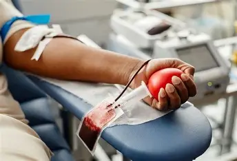

Seja um Anjo. Doe sangue, salve vidas.
A ONG Anjos de Sangue ADS conecta pessoas dispostas a ajudar com quem mais precisa. Sua doação é um ato de amor que pode salvar até quatro vidas.
Quero ser um Doador
Situação Atual dos Estoques
Nossos hemocentros parceiros precisam da sua ajuda! Veja quais tipos sanguíneos estão com estoque baixo e agende sua doação.
O-
Crítico
O+
Alerta
A-
Suficiente
A+
Suficiente
B-
Alerta
B+
Suficiente
AB-
Crítico
AB+
Suficiente
Encontre o Local de Doação Mais Próximo
Fale Conosco
Sede (Simbólica)
Av. Paulista, 1000
São Paulo - SP, 01310-100